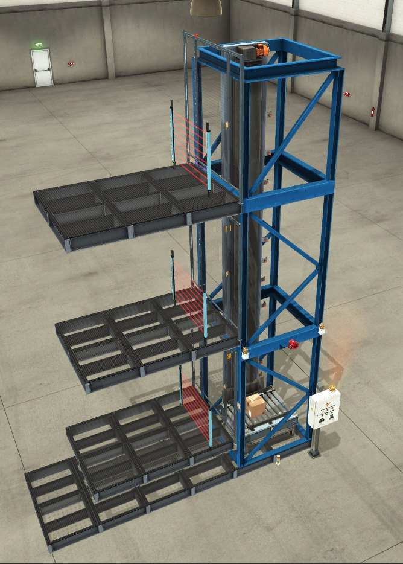
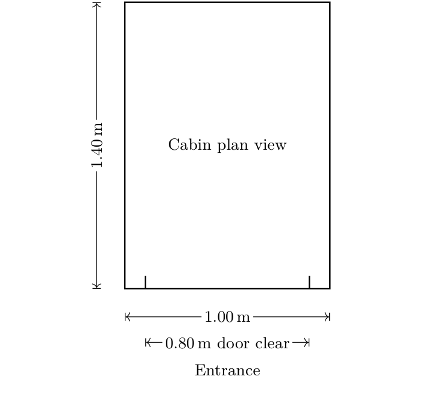
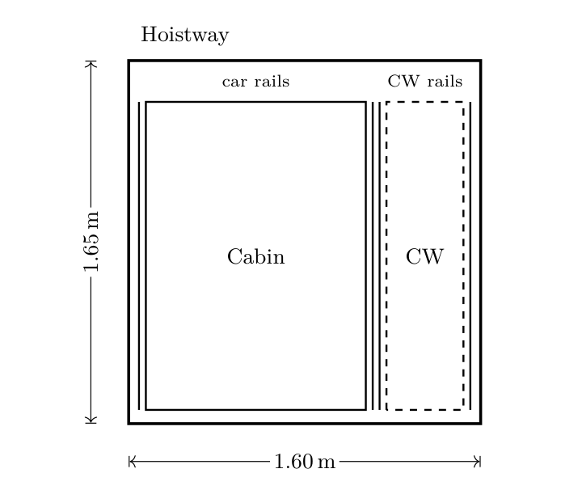
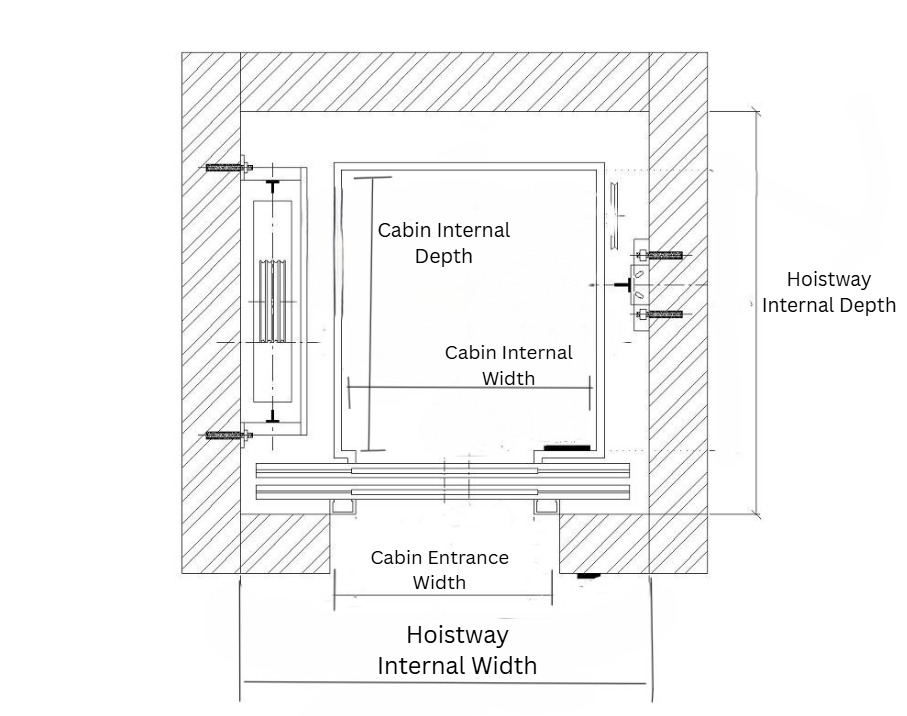
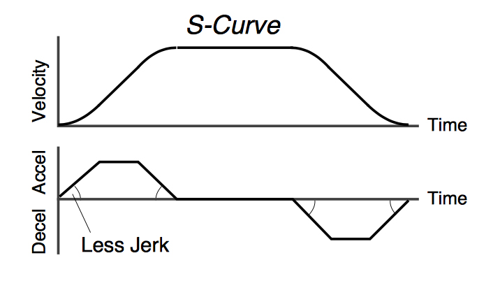
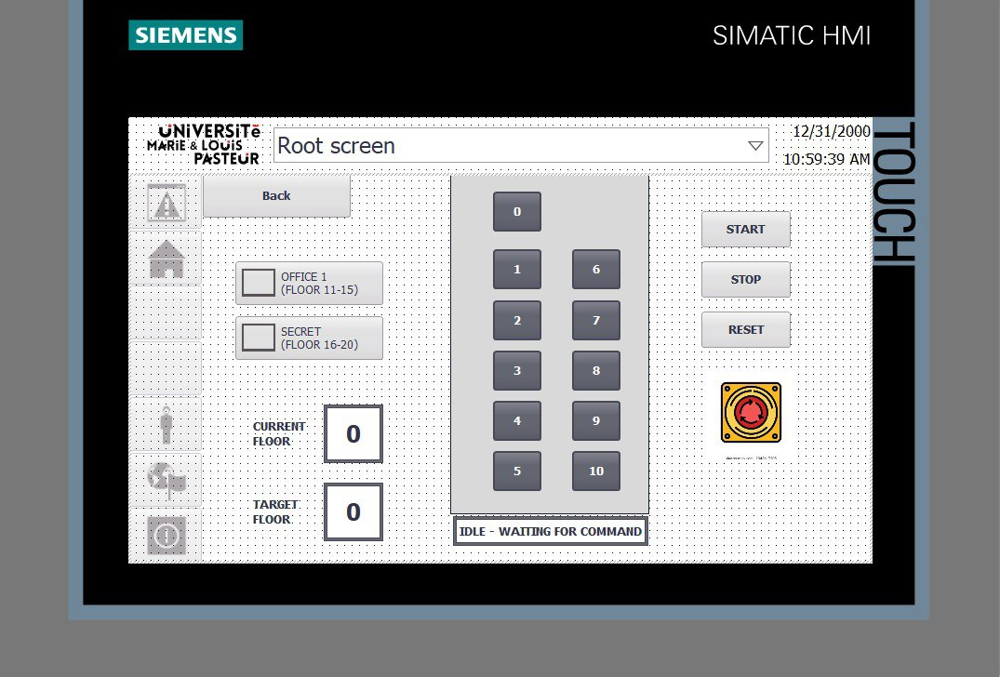

Passenger Elevator Concept Design for a 20-Storey Building
M1 ARMAC Project Université Marie et Louis Pasteur Team of 5 · Dec 2025
A concept-level engineering design of a machine-room-less (MRL) traction passenger elevator for a 20-storey building. The design covers the full system: cabin, door and hoistway geometry, sizing of the traction machine and drive, a Siemens safety-PLC control architecture with distributed I/O, the sensor set, a layered safety concept aligned with EN 81, a cost model, and a PLC simulation of the elevator sequence in Factory I/O.
Design basis
| Stops / travel height | 20 floors · 3.0 m floor-to-floor · 57 m travel |
| Rated load | 480 kg (6 passengers) |
| Nominal speed | 1.0 m/s ("about 1 s per metre") |
| Ride comfort | acceleration 0.6 m/s² · jerk 1.0 m/s³ (S-curve) · levelling ±5 mm |
| Technology | MRL traction · gearless PMSM · regenerative VVVF drive |
| Standards | EN 81-20 / -50 / -70 / -28 / -73 · EN 60204-1 · EN ISO 13849 / IEC 62061 |

1) Mechanical Layout
The dimensions were worked out top-down: first the cabin size and door opening needed for wheelchair access (EN 81-70), then space for the car frame, doors and running clearances, then the hoistway plan with the cabin and counterweight paths, and finally the pit depth and overhead height for the buffers, the traction machine and the safety spaces.
| Element | Value |
|---|---|
| Cabin internal (W × D × H) | 1.00 × 1.40 × 2.20 m |
| Door clear opening (W × H) | 0.80 × 2.10 m, two-panel telescopic sliding doors |
| Hoistway internal (W × D) | 1.60 × 1.65 m |
| Pit depth / overhead | 1.00 m / 3.60 m (machine, sheaves and clearances in the overhead) |



2) Traction Sizing
The traction machine is sized from the worst-case unbalanced mass plus the force needed to accelerate, with a margin for losses and uncertainty. The counterweight balances the empty car plus half the rated load.
High torque at low speed is exactly where a gearless PMSM performs best. The selected machine has a spring-applied, electrically released brake and an absolute encoder, with 1:1 roping.
3) Drive Integration & Ride Quality
- Yaskawa L1000A in closed-loop vector control for PM motors (A1-02 = 7) with absolute encoder feedback, giving full torque at 0 Hz for smooth levelling.
- Stationary auto-tuning (T2-01 mode 4) identifies the motor parameters and stores the encoder-to-rotor offset (E5-11).
- Speed reference and run command come over PROFINET (b1-01 = b1-02 = 3). Torque removal is hard-wired through Safe Torque Off.
- Torque-proving brake handshake: the drive builds holding torque at 0 Hz and signals "torque ready" (H2-01 = 37). Only then does the PLC release the brake, which prevents rollback and jerk at start.
- Encoder signal integrity: 360° shield clamp at the drive end only, with at least 0.2 m separation from motor power cables.

4) Control Architecture & Sensors
The control system is split into three coordinated layers:
- Functional control: a Siemens S7-1500F runs call handling, dispatching, door logic and operating modes, with ET200SP distributed I/O for the large number of field signals.
- Motion control: the traction drive runs the inner current, torque and speed loops, the S-curve ramps and regeneration.
- Safety: the S7-1500F safety program with ET200SP F modules handles the emergency stops, door interlocks, final limits and the STO outputs, independently of the standard logic.
Sensor set
- Motor-shaft absolute encoder, plus an absolute code-rail position system in the hoistway that is immune to rope slip and levels to better than 1 mm.
- Door-zone / vane sensors at every landing as a redundant position reference.
- A multi-beam light curtain on the car door to detect obstructions and reopen the doors.
- Electromechanical door locks in the safety chain, plus RFID-coded safety sensors (Pilz PSENcode) for contactless closed-and-locked confirmation.
- Load cells in the car frame's load path: departure is blocked under overload. This is more stable than sensing load in the cabin floor.
- Brake applied/released feedback, and drive ready/fault status.
I/O sizing (20 floors)
| Digital inputs | 76 (incl. 40 door-zone sensors, 21 door-lock confirmations) |
| Digital outputs | 11 (doors, brake, dual-channel STO, indicators) |
| Analog input | 1 × 4–20 mA (car load) |
| PROFINET devices | ET200SP F CPU, L1000A drive, 2 × 9" HMI Comfort Panels |
| Modules | 3 × 16 DI, 1 × 16 DO, 1 × 4 AI, 2 × 16 F-DI, 1 × 4 F-DO |
5) Safety Architecture
The design follows the EU Lifts Directive and EN 81: several independent layers, so that no single failure can lead to a hazard.
- Mechanical: overspeed governor, progressive safety gear and buffers, all working without electronics or software.
- Electrical safety chain: a series circuit of E-stops, door locks, pit and inspection switches, final limits and the governor contact. Opening any of them triggers STO, applies the brake and puts the system in a safe fault state.
- Drive safety: dual-channel STO on the L1000A.
- Supervision: the PLC monitors, logs and informs passengers, but never replaces a primary safety function.
- Power: separate traction, brake, control and safety supplies. A UPS powers only the safety and control electronics and the EN 81-28 alarm and intercom.
| Safety function | Target |
|---|---|
| No motion with doors unlocked | PL e / SIL 3 |
| Emergency stop (car + pit) | PL d–e |
| Safe removal of motor torque (STO) | SIL 2–3 |
| Uncontrolled movement prevention | PL d–e |
| Overspeed protection | Mechanical (EN 81) |
6) PLC Simulation
The elevator sequence was first drawn as a GRAFCET-style diagram, then implemented in TIA Portal and run on PLCSIM against a 3-floor Factory I/O scene, with a simple HMI for commands and status. All Factory I/O signals are mapped in one function into structured data blocks, so the logic uses symbolic, array-based access that can scale to 20 floors without repeating code for every floor.
State machine (SCL)
0 Idle → 20 Move → 30 Open door → 40 Door hold → 50 Close door → 0 Idle · any stop or safety loss → 99 Fault
- The car departs only when the door-closed sensor and the safety signal are true.
- Latches set the slow speed both when leaving a floor and when approaching the target.
- If the light curtain is interrupted, the door-hold timer resets or a closing door reopens.
- Every scan starts with all outputs reset to a safe default.
The simulation checks the program structure and sequencing only. It runs on TIA Portal V15 with a standard PLC, so safety is represented by interlocks, and traction dynamics are not modelled.

7) Cost Estimate
| Subsystem | Estimate (EUR) |
|---|---|
| Mechanical | 30,500 – 40,500 |
| Traction drive & electrical | 16,500 – 22,500 |
| Control & safety | 10,000 – 15,000 |
| Cabling & wiring | 5,300 – 8,200 |
| Total (excl. installation) | 62,000 – 86,000 |
The mechanical subsystem and the traction machine are the largest costs. A gearless PMSM with a regenerative drive costs more up front, but uses less energy and wears less over its life. The MRL layout removes the cost of building a dedicated machine room.